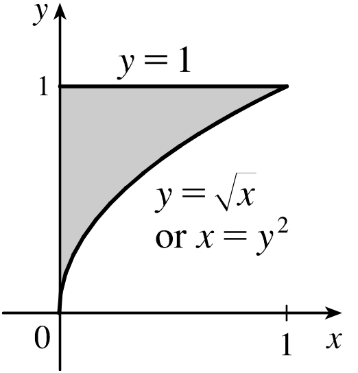
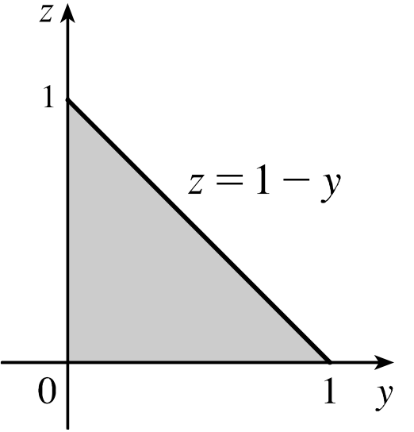
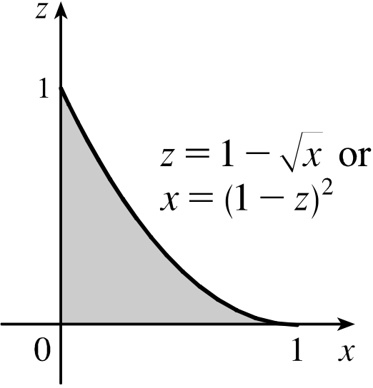

Chapter 30
By the end of this section, you should be able to answer the following questions:
We can extend the definition of a double integral to a triple integral \[ \iiint_R f(x,y,z)~dV \] where $R$ is a region in $\R^3$ and $dV$ is an element of volume.
If $R$ is a region in $\R^3$ specified by
$r(x,y)\leq z \leq s(x,y)$
$p(x)\leq y \leq q(x)$
$a\leq x \leq b$
then
$\ds \iiint_\limits{R} f(x,y,z)~dV = \int_a^b \left\{ \int_{p(x)}^{q(x)} \left[ \int_{r(x,y)}^{s(x,y)} f(x,y,z)dz \right]dy \right\}dx. $
In two dimensions, there are 2 possible orders of integration. In three dimensions, there are 6.
Projection of $R$ on the $xy$-plane: Regions Type 1 (Type I & Type II)
Source: Sterwart's Calculus 8th ed.
with dimensions $0\leq x \leq L,$ $0\leq y \leq W$ and $0\leq z\leq H$
if the density is $\rho = \rho_0 + \alpha xyz.$
Consider a solid object that occupies a region $R$. Then the density function of this solid is \[ \rho (x,y,z) = \lim_{\Delta V \to 0} \frac{\Delta m}{\Delta V} \] in units of mass per unit volume, at any given point $(x, y, z)$. Then its mass is
\[ m = \iiint_R \rho(x,y,z)~dV. \]
with dimensions $0\leq x \leq L,$ $0\leq y \leq W$ and $0\leq z\leq H$
if the density is $\rho = \rho_0 + \alpha xyz.$
Consider a solid object that occupies a region $R$. Then the density function of this solid is \[ \rho (x,y,z) = \lim_{\Delta V \to 0} \frac{\Delta m}{\Delta V} \] in units of mass per unit volume, at any given point $(x, y, z)$. Then its mass is
\[ m = \iiint_R \rho(x,y,z)~dV. \]
In this case our region is $$ R = \left\{ (x,y,z) ~|~ 0\leq x \leq L, 0\leq y \leq W, 0\leq z\leq H \right\}. $$
| $m$ | $\displaystyle =\iiint_R \rho(x,y,z) ~dV$ $\displaystyle =\iiint_R \left( ~\rho_0 + \alpha xyz~\right) dV$ |
| $\displaystyle =\int_{z=0}^{z=H} \int_{y=0}^{y=W} \int_{x=0}^{x=L}\left( ~\rho_0 + \alpha xyz~\right)dx~dy~dz$ | |
| $\displaystyle =\int_{z=0}^{z=H} \int_{y=0}^{y=W} \left( ~\rho_0x + \alpha \frac{x^2}{2}yz~\right)\Bigg|_{x=0}^{x=L} dy~dz$ | |
| $\displaystyle =\int_{z=0}^{z=H} \int_{y=0}^{y=W} \left( ~\rho_0L + \alpha \frac{L^2}{2}yz~\right) dy~dz$ |
| $m$ | $\displaystyle =\int_{z=0}^{z=H} \int_{y=0}^{y=W} \left( ~\rho_0L + \alpha \frac{L^2}{2}yz~\right) dy~dz$ |
| $\displaystyle =\int_{z=0}^{z=H} \left( ~\rho_0Ly + \alpha \frac{L^2}{2}\frac{y^2}{2}z~\right)\Bigg|_{y=0}^{y=W} dz$ | |
| $\displaystyle =\int_{z=0}^{z=H} \left( ~\rho_0LW + \alpha \frac{L^2}{2}\frac{W^2}{2}z~\right) dz$ | |
| $\displaystyle = \left( ~\rho_0LWz + \alpha \frac{L^2}{2}\frac{W^2}{2}\frac{z^2}{2}~\right)\Bigg|_{z=0}^{z=H} $ | |
| $\displaystyle =\rho_0 LWH + \frac{\alpha}{8} L^2W^2H^2.$ |
the surfaces $x=0,$ $y=0,$ $z=0$ and $x+y+z=1.$
There are different ways to compute the integral. First, let's integrate with respect to $z$. Then $0\leq z \leq 1-x-y.$ Thus \[ \iiint_R z~dV = \iint_{D_{xy}} \left[ \int_{z=0}^{z=1-x-y}z~dz\right]dA_{xy} \] where $D_{xy}$ is the projection of $R$ on the plane $xy.$
The region $R$ is bounded by $x=0,$ $y=0$ and the intersection of $z=0$ with $z=1-x-y,$ i.e., $0=1-x-y,$ or $x+y=1.$
the surfaces $x=0,$ $y=0,$ $z=0$ and $x+y+z=1.$
This region $D_{xy}$ is of both types (I and II). Consider $D_{xy}$ as a type I region. Then
| $\displaystyle \iiint_R z~dV$ | $\displaystyle = \iint_{D_{xy}} \left[ \int_{z=0}^{z=1-x-y}z~dz\right]dA_{xy}$ |
| $\displaystyle = \int _{x=0}^{x=1} \int_{y=0}^{y=1-x} \left[ \int_{z=0}^{z=1-x-y}z~dz \right]dy~dx$ | |
| $\displaystyle = \int _{x=0}^{x=1} \int_{y=0}^{y=1-x} \left[ \frac{z^2}{2}\Bigg|_{z=0}^{z=1-x-y} \right]dy~dx$ |
This region $D_{xy}$ is of both types (I and II). Consider $D_{xy}$ as a type I region. Then
| $\displaystyle \iiint_R z~dV$ | $\displaystyle = \int _{x=0}^{x=1} \int_{y=0}^{y=1-x} \left[ \frac{z^2}{2}\Bigg|_{z=0}^{z=1-x-y} \right]dy~dx$ |
| $\displaystyle = \int _{x=0}^{x=1} \int_{y=0}^{y=1-x} \frac{(1-x-y)^2}{2} dy~dx$ | |
| $\displaystyle = \int _{x=0}^{x=1} \left[ -\frac{1}{6}\left( 1-y-x \right)^3 \Bigg|_{y=0}^{y=1-x} \right]dx$ |
This region $D_{xy}$ is of both types (I and II). Consider $D_{xy}$ as a type I region. Then
| $\displaystyle \iiint_R z~dV$ | $\displaystyle = \int _{x=0}^{x=1} \left[ -\frac{1}{6}\left( 1-y-x \right)^3 \Bigg|_{y=0}^{y=1-x} \right]dx$ |
| $\displaystyle = \int _{x=0}^{x=1} \frac{1}{6}\left(1-x \right)^3dx$ | |
| $\displaystyle = -\frac{1}{24}\left(1-x\right)^4 \Bigg|_{x=0}^{x=1} $ $\displaystyle = \frac{1}{24}.$ |
Express $\,\ds\int_{0}^{1}\int_{\sqrt{x}}^{1}\int_{0}^{1-y} f(x,y,z)~dz~dy~dx\,$ in the orders $\,dz~dx~dy\,$ and $\,dy~dz~dx.$
1. Express $\,\int_{0}^{1}\int_{\sqrt{x}}^{1}\int_{0}^{1-y} f(x,y,z)~dz~dy~dx\,$ in the order $\,dz$ $dx~dy.$
$\displaystyle \int_{x=0}^{x=1}\int_{y=\sqrt{x}}^{y=1}\left[ \int_{z=0}^{z=1-y} f ~dz \right]dy~dx$
$ \qquad \displaystyle = \iint_{D}\left[ \int_{z=0}^{z=1-y} f ~dz \right]dy~dx $ ($D=$ projection of the region on the plane $xy$)
$ \qquad\displaystyle = \iint_{D}\left[ \int_{z=0}^{z=1-y} f ~dz \right]$ $dx~dy$
$ \qquad\displaystyle = \int_{y=0}^{y=1}\int_{x=0}^{x=y^2}$ $\displaystyle \left[ \int_{z=0}^{z=1-y} f ~dz \right]$ $dx~dy$
The original integral was of type I. But when we change the order $dy~dx$ to $dx~dy,$ we have now a type II integral.
2. Express $\,\int_{0}^{1}\int_{\sqrt{x}}^{1}\int_{0}^{1-y} f(x,y,z)~dz~dy~dx\,$ in the order $dy~dz$ $dx$
$\displaystyle \int_{x=0}^{x=1}\int_{y=\sqrt{x}}^{y=1}\left[ \int_{z=0}^{z=1-y} f ~dz \right]dy~dx$
$\qquad \qquad \qquad \displaystyle = \int_{x=0}^{x=1}\left[ \int_{y=\sqrt{x}}^{y=1} \int_{z=0}^{z=1-y} f ~dz~ dy\right]dx $
$\qquad \qquad \qquad \displaystyle = \int_{x=0}^{x=1}\bigg[ \bigg.$ $\displaystyle\int_{z=0}^{z=1-\sqrt{x}} \int_{y=\sqrt{x}}^{y=1-z}$ $\displaystyle \,f$ $dy~ dz$ $\bigg.\bigg]dx $
$\qquad \qquad \qquad \displaystyle = \int_{x=0}^{x=1} \int_{z=0}^{z=1-\sqrt{x}} \left[ \int_{y=\sqrt{x}}^{y=1-z} f~dy \right] dz~dx $
$\qquad \qquad \qquad \displaystyle = \iint_D \left[ \int_{y=\sqrt{x}}^{y=1-z} f~dy \right] dA$
Here $D$ is the projection of the region onto the plane $xz.$
2. Express $\,\int_{0}^{1}\int_{\sqrt{x}}^{1}\int_{0}^{1-y} f(x,y,z)~dz~dy~dx\,$ in the order $\,\underline{dy~dz~dx}.$
\[ \int_{x=0}^{x=1}\int_{y=\sqrt{x}}^{y=1}\left[ \int_{z=0}^{z=1-y} f ~dz \right]dy~dx = \int_{x=0}^{x=1} \int_{z=0}^{z=1-\sqrt{x}} \left[ \int_{y=\sqrt{x}}^{y=1-z} f~dy \right] dz~dx \]
|

|
$\displaystyle \int_0^1$ $\displaystyle \int_{\sqrt{x}}^{1}$ $\displaystyle \int_{0}^{1-y} $ $f$ $ dz$ $dy$ $dx$ $ \,= $ $\displaystyle \int_0^1 $ $\displaystyle \int_{0}^{y^2} $ $\displaystyle \int_{0}^{1-y}$ $f$ $ dz$ $dx$ $dy$ |
|

|
$\displaystyle \int_0^1$
$\displaystyle \int_{0}^{1-z}$
$\displaystyle \int_{0}^{y^2}$
$f$
$dx$
$dy$
|
|

|
$\displaystyle \int_0^1$ $\displaystyle \int_{0}^{1-\sqrt{x}}$ $\displaystyle \int_{\sqrt{x}}^{1-z}$ $f$ $ dy$ $dz$ $dx$ $ \,= $ $\displaystyle \int_0^1 $ $\displaystyle \int_{0}^{(1-z)^2}$ $\displaystyle \int_{\sqrt{x}}^{1-z}$ $f$ $ dy$ $dx$ $dz$ |
|
|
$\displaystyle \int_0^1$ $\displaystyle \int_{\sqrt{x}}^{1}$ $\displaystyle \int_{0}^{1-y} $ $f$ $dz$ $dy$ $dx$ $ \,= $ $\displaystyle \int_0^1$ $\displaystyle \int_{0}^{y^2}$ $\displaystyle \int_{0}^{1-y}$ $f$ $ dz$ $dx$ $dy$ |
|
|
$\displaystyle \int_0^1$ $\displaystyle \int_{0}^{1-z}$ $\displaystyle \int_{0}^{y^2}$ $f$ $ dx$ $dy$ $dz$ $ \,= $ $\displaystyle \int_0^1$ $\displaystyle\int_{0}^{1-y}$ $\displaystyle\int_{0}^{y^2} $ $f$ $ dx$ $dz$ $dy$ |
|
|
$\displaystyle \int_0^1$ $\displaystyle \int_{0}^{1-\sqrt{x}}$ $\displaystyle \int_{\sqrt{x}}^{1-z}$ $f$ $ dy$ $dz$ $dx$ $ \,= $ $\displaystyle \int_0^1 $ $\displaystyle \int_{0}^{(1-z)^2}$ $\displaystyle \int_{\sqrt{x}}^{1-z}$ $f$ $ dy$ $dx$ $dz$ |